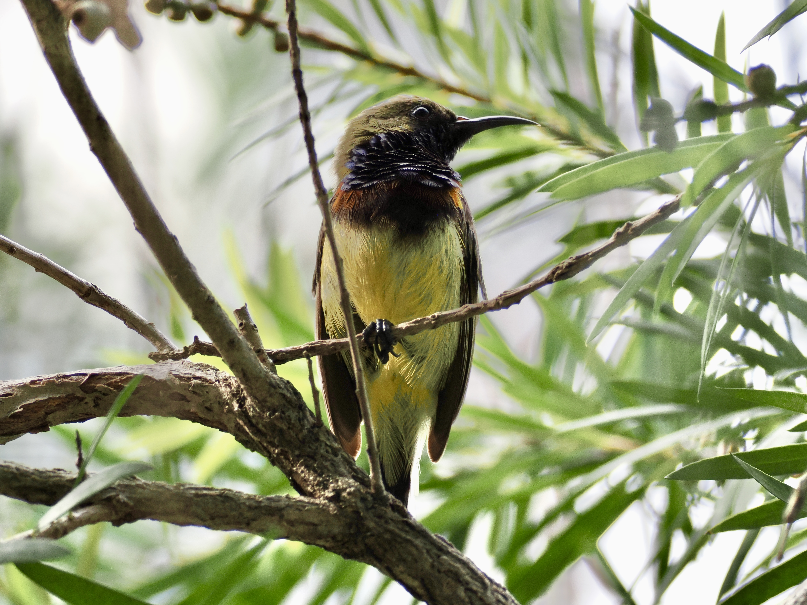
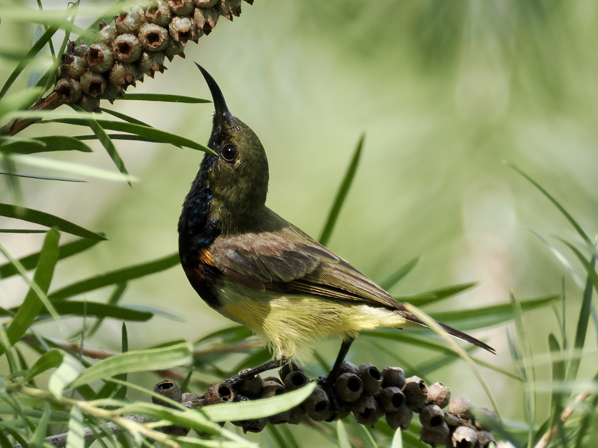

Ornate Sunbird
Cinnyris ornatus

A small bird an olive back and yellow belly. Male has a metallic blue-and-purple throat. Below the blue patch is a maroon band, with bright orange ends. I would say this bird lives up to its name. I wonder why it's listed as an escapee on eBird?

I would take the opportunity to talk about the power of Facebook. Social media (presumably) has gathered over 40 people in a park to photograph this bird. The average age was around 50 as well. I must say, birding is a time-consuming hobby and arguably only some people have the luxury to show up in a park on a random afternoon.